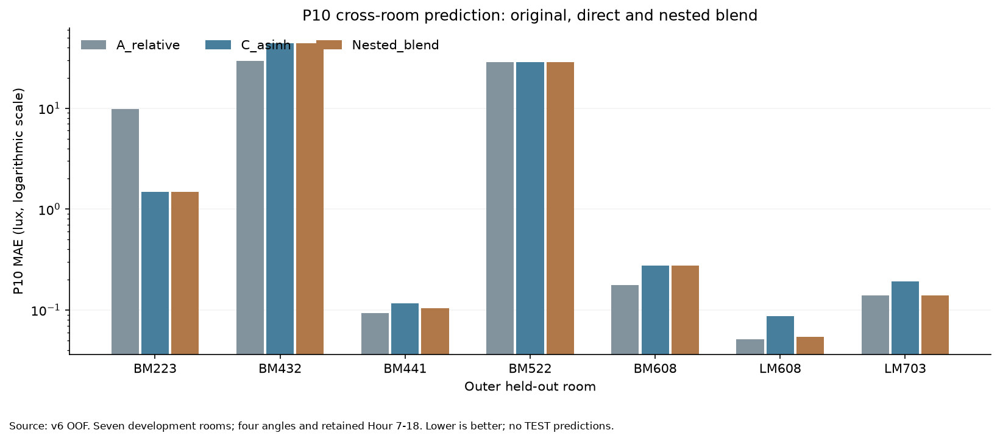
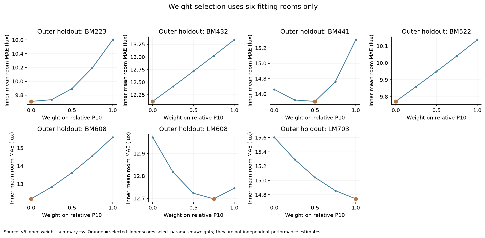

第六轮：P10融合权重实验
融合没有提升跨房间P10效果，保留原相对P10基线。
35组内层权重候选 · 7次权重选择 · 复用原树模型，无重复拟合 · TEST预测/评分0
- 房间平均P10 MAE：原相对方法9.748 lux，直接asinh 10.743 lux，内层选择权重的融合10.729 lux。融合相对原方法的MAE变化为+10.07%。
- 融合在2个房间改善、1个持平、4个变差；最差房间MAE从29.275升至44.361 lux。
- BM223与BM432的外层折都由内层选择了纯asinh（相对方法权重0）：前者改善，后者明显恶化。选择过程没有偷看外层标签，但六个训练房间内的偏好未能稳定迁移到新房间。
- 平均asinh误差从0.5038降至0.4678，但原单位MAE及逐房间标准未通过。本轮不因次要指标更好而改变预先确定的主指标。
- BM223 P10 MAE：9.757 → 1.479 lux；相对P10权重0.00。
- BM432 P10 MAE：29.275 → 44.361 lux；相对P10权重0.00。
- BM522 P10 MAE：28.741 → 28.691 lux；相对P10权重0.00。
方法和验证
每个外层折用6个房间训练、1个房间评分。复用v5内层3折预测及已在内层选定的RF参数，在1、0.75、0.5、0.25、0五个相对P10权重中，以6个验证房间平均MAE选择；完全相同时优先更大的相对P10权重。7个权重全部确定后才读取外层标签评分。
融合P10 = w×相对P10预测 + (1−w)×直接asinh P10预测。同一折的w对所有小时和角度固定；不按房间名字、真实照度或已知最优方法路由。
预设标准：相对A，平均MAE至少降低10%，至少5/7房间不恶化，最差房间MAE不增加。浮点持平容差为1e−9 lux；这是开发筛选条件，不是工程标准。
预测结果
每个房间先计算指标，再等权平均。asinh误差使用固定1 lux尺度；R²不是准确率百分比。主指标是原单位MAE。

内层改善是否迁移到外层
内层MAE降低为正表示在六个训练房间的验证数据上有收益；外层MAE降低为负表示对新房间反而变差。这两列来自不同房间集合，不能把差值解释为单纯随机波动或因果效应。

逐折权重明细
当前决定
本轮未通过筛选，继续保留A作为P10开发基准。按预定停止规则，暂停细化权重或增加按房间切换规则；下一步优先取得与原模拟一致的几何、网格或其他独立输入信息。
只有7个开发房间，且已经用于多轮方法设计。内层分数同时用于参数/权重选择，不能作为独立性能；外层分数仍属于开发证据。三个TEST房间未预测或评分。没有新模拟、没有全7房间最终重训，其他四项性能指标没有改变。
独立复核了210个内层房间分数、35个候选平均分、7次权重选择、122,640条融合预测及21条外层房间指标。7个折配置在不含Room_ID或真实目标的13项特征上重载推断通过。
models/experiment_v6保存的是各折融合配置，引用原v5模型，不是最终部署模型。原数据、模型及历史预测保持不变。旧提案保留原始未批准文本；本次批准与执行状态记录在新的配置和批准凭据中。
HTML链接和脚本静态验证；图表视觉检查；浏览器交互和原生Canvas编译未验证。
文件